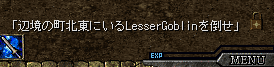
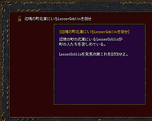

- ミッション -
ミッションとはプレイヤーがこなすべき仕事のことです。
プレイヤーがミッションをこなしていくことで、ストーリーが展開していきます。
ミッションは町の人と会話すると頼まれる場合があり、その内容は様々です。
また、ミッションには必ずクリアしなければならないミッションと、
クリアしなくても問題なくストーリーが展開していくミッションがあります。
|  |
| ミッションを与えられた直後は画面右下にミッションの目的が表示されます。 右側の鍵アイコンをクリックするとミッションリストが開きます。 |
|  |
| 今までに与えられたミッションの一覧です。 ミッションのタイトルを左クリックすると、 そのミッションについての詳細が表示されます。 既にクリアしたミッションは、ミッションのタイトル左側の 鍵アイコンが開いた状態で表示されます。 まだクリアしていないミッションは、 鍵アイコンが閉まった状態で表示されます。 |